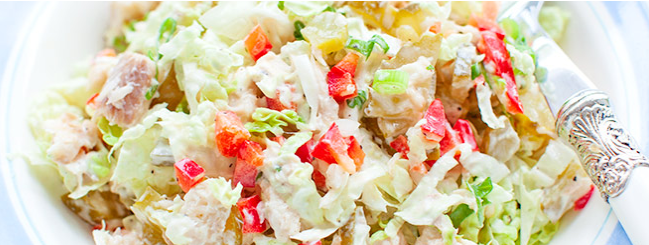

Sałatka Z Wędzonym Pstrągiem
Składniki:
- 125 g wędzonego pstrąga
- 3 kiszone ogórki
- 1/4 cebuli
- 1/2 podłużnej czerwonej papryki
- 4 łyżki posiekanego szczypiorku
- 1/4 sałaty lodowej lub kapusty pekińskiej
- sól i pieprz
- opcjonalnie do posypania: tarty parmezan
Sos:
- 2 łyżki majonezu
- 1 łyżka jogurtu naturalnego
- 1 mały ząbek czosnku (starty)
- 1 łyżeczka musztardy
- 1 łyżeczka sosu worecstershire (lub sojowego)
Przygotowanie:
- Pstrąga rozddzielić widelcem na kawałki i wyjąć ości (jeśli takie są), włożyć do salaterki.
- Dodać pokrojone w kosteczkę ogórki kiszone, cebulę i paprykę.
- Dodać szczypiorek oraz posiekane liście sałaty lodowej lub kapusty pekińskiej.
- Doprawić solą i pieprzem oraz wymieszać z sosem. Opcjonalnie posypać tartym parmezanem.
